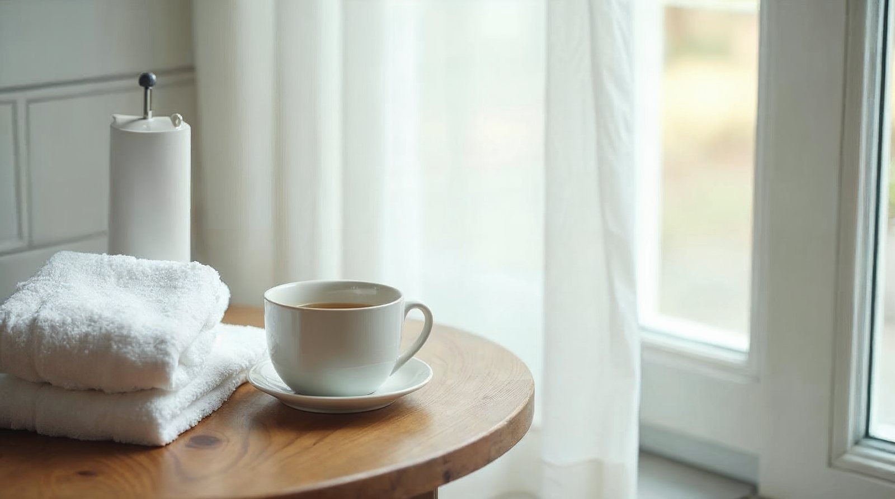
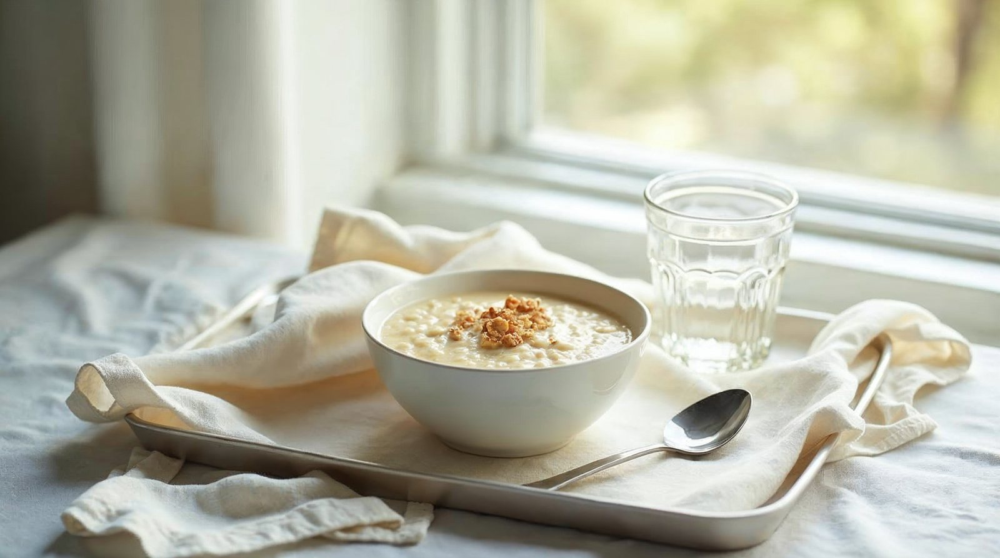
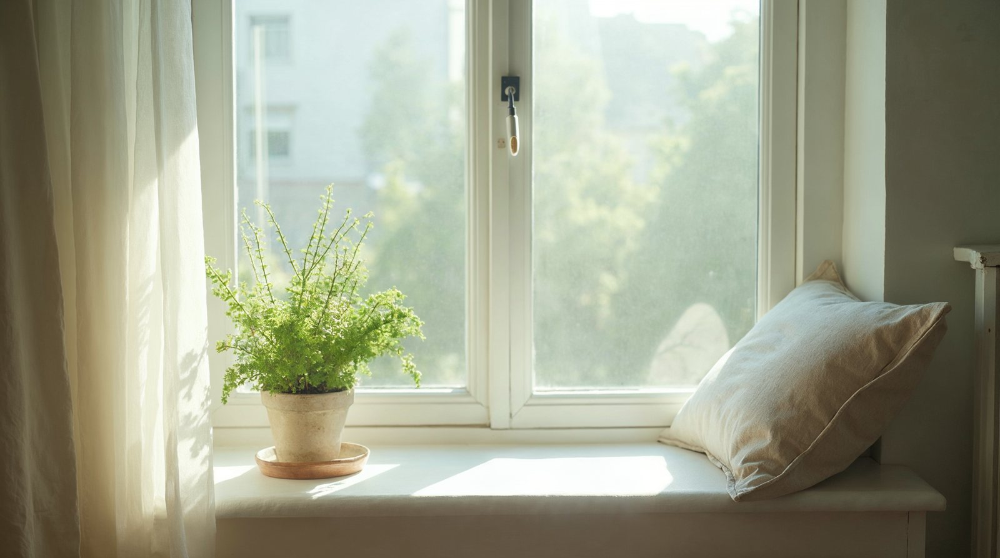

이종호 한의사 감수좋은꿈참사랑한의원 대표원장 (한의사 면허번호 19769)발행 2026-11-26 · 수정 2026-11-27
이 글의 차례
점심을 먹고 나른한 오후, 크게 하품을 하는 순간 턱이 '덜컥' 하고 앞으로 빠져 입이 다물어지지 않아요. 당황해서 턱을 이리저리 움직여 보다가 겨우 제자리로 돌아오면, 그제야 숨을 내쉬시죠. 그 뒤로는 하품이 나올 때마다 손으로 턱을 받치게 되고요.
진료실에서 이 얘기를 꺼내시는 분들은 대개 조금 부끄러워하세요. "하품하다 턱이 빠졌어요"라는 말이 어색하게 느껴지시는 거죠. 그런데 부끄러워하실 일이 아니에요. 턱이 빠지는 일은 생각보다 드물지 않거든요. 한 번 겪은 분은 다시 겪을까 봐 일상에서 늘 조심하며 지내시고요.
턱이 빠진다는 건 아래턱뼈의 둥근 머리 부분이 원래 자리인 귀 앞의 오목한 자리를 벗어나 앞쪽으로 넘어가 버린 상태예요. 넘어간 턱머리가 앞쪽 뼈 언덕에 걸리면 입이 벌어진 채로 다물어지지 않는 거예요.
여기서 저는 둘을 나눠서 봐요. '턱이 빠진 일'과 '턱이 빠지기 쉬운 상태'는 다른 얘기예요. 앞의 것은 그날 한 번의 일이고, 뒤의 것은 턱을 붙잡아 주는 인대와 근육, 습관이 함께 얽힌 일이라서, 되풀이를 줄이려면 뒤쪽을 봐야 하거든요.
이 글에서는 턱이 왜 빠지는지, 왜 한 번 빠지면 되풀이되기 쉬운지, 턱관절 장애와는 어떻게 다른지, 되풀이를 줄이기 위해 무엇을 해 볼 수 있는지를 차례로 풀어 볼게요.

턱이 빠진다는 건 어떤 상태인가요?
턱관절은 귀 바로 앞에 있습니다. 손가락을 귀 앞에 대고 입을 벌렸다 다물어 보면 무언가 움직이는 느낌이 드는데, 그것이 아래턱뼈의 머리 부분입니다. 입을 조금 벌릴 때는 이 머리가 제자리에서 돌고, 크게 벌릴 때는 앞으로 미끄러져 나옵니다.
입을 아주 크게 벌리면 턱머리가 앞쪽의 뼈 언덕 가까이까지 나옵니다. 보통은 그 언덕을 넘지 않고 다시 돌아오지만, 턱을 붙잡아 주는 인대와 관절 주머니가 느슨하거나, 턱을 여닫는 근육들의 협조가 순간 어긋나면 언덕을 넘어가 걸려 버립니다. 이것이 턱이 빠진 상태입니다.
빠진 상태에서는 입이 벌어진 채 다물어지지 않고, 아래턱이 앞으로 나와 보이며, 말하기와 침 삼키기가 어려워집니다. 양쪽이 함께 빠지기도 하고 한쪽만 빠져 턱이 한쪽으로 돌아가 보이기도 합니다.
빠지기 직전까지 갔다가 스스로 돌아오는 경우도 있습니다. 입을 크게 벌릴 때 턱이 '툭' 걸렸다가 '덜컥' 하고 돌아오는 느낌이 반복된다면, 빠질 듯 말 듯한 상태가 이어지고 있는 것일 수 있습니다.
왜 한 번 빠지면 되풀이되기 쉬울까요
턱이 한 번 빠지면 그 과정에서 턱을 붙잡아 주는 인대와 관절 주머니가 늘어납니다. 늘어난 조직은 원래만큼 단단하게 턱을 붙잡지 못해서, 다음에 입을 크게 벌릴 때 턱머리가 다시 언덕을 넘어가기 쉬워집니다.
턱을 여닫는 근육의 협조도 중요합니다. 입을 크게 벌리는 순간에는 턱을 앞으로 당기는 근육과 뒤로 붙잡는 근육이 함께 조화롭게 일해야 하는데, 피곤하거나 긴장해 근육이 굳어 있으면 이 협조가 어긋나 턱이 앞으로 과하게 미끄러질 수 있습니다.
원래 관절이 유연한 체질이신 분도 계십니다. 손가락이나 팔꿈치가 다른 사람보다 많이 젖혀지는 분은 턱관절도 느슨한 경우가 있어서, 크게 다친 적이 없어도 턱이 빠지는 일이 생기기도 합니다.
마지막으로 두려움도 영향을 줍니다. 턱이 빠질까 봐 입을 벌릴 때마다 턱 주변에 힘을 꽉 주면 근육이 더 굳고, 굳은 근육은 오히려 부드러운 움직임을 방해합니다. 그래서 되풀이되는 분일수록 턱 주변을 편안하게 쓰는 연습이 필요합니다.
턱관절 장애와는 어떻게 다른가요?
턱관절 장애는 턱에서 소리가 나거나, 입이 잘 벌어지지 않거나, 턱 주변이 아픈 상태를 두루 이르는 말입니다. 그 가운데 입이 잘 안 벌어지는 경우는 관절 안의 연골판이 앞으로 밀려 턱머리가 앞으로 나오지 못하는 것이 흔한 이유입니다.
습관성 탈구는 반대입니다. 턱이 너무 많이 앞으로 나와 걸려 버려서 입이 다물어지지 않는 것이 핵심입니다. 입이 안 벌어지는 것과 안 다물어지는 것, 정반대의 불편이라 살피는 방향도 다릅니다.
다만 두 가지가 함께 있는 분도 계십니다. 평소에는 턱에서 '딸깍' 소리가 나고 가끔 턱이 걸리다가, 크게 하품할 때 빠지는 식입니다. 그래서 턱이 빠지는 분도 평소의 소리와 통증, 입 벌어지는 폭을 함께 살핍니다.
턱이 빠지기 쉬운 상황
턱이 빠지는 일은 대개 입을 평소보다 크게, 갑자기 벌리는 순간에 생깁니다. 아래 상황에서 겪으셨는지 떠올려 보세요.
- 크게 하품할 때
- 크게 웃거나 소리를 지를 때
- 햄버거나 큰 과일처럼 크게 베어 물 때
- 치과 치료로 입을 오래 크게 벌리고 있었을 때
- 노래를 부르거나 입을 크게 벌리는 운동을 할 때
- 피곤하거나 잠이 부족한 날
특히 피곤하고 졸린 날에는 하품이 크고 잦아지며 근육의 협조도 떨어져 턱이 빠지기 쉽습니다. 되풀이되는 분 가운데 잠이 부족한 시기에 몰려서 겪는 분이 많습니다.
나이와 생활에 따라 달라지는 턱의 부담
젊은 분은 관절이 유연해 턱이 빠지는 일을 겪는 경우가 있고, 이를 악무는 습관이나 턱을 괴는 버릇이 함께 있는 경우가 많습니다. 공부나 일에 몰두할 때 이를 꽉 물고 있지는 않은지 돌아보시길 권합니다.
나이가 드시면서 치아가 빠지거나 틀니를 쓰시게 되면 턱의 맞물림이 달라져 턱관절이 불안정해지기도 합니다. 틀니가 잘 맞지 않거나 오래 빼고 지내시는 경우 치과에서 맞물림을 함께 확인받으시는 것이 좋습니다.
스트레스가 많은 시기에는 낮에는 이를 악물고 밤에는 이를 갈며 턱 근육이 쉬지 못합니다. 이렇게 지친 근육은 입을 크게 벌리는 순간 협조가 어긋나기 쉬워서, 마음의 긴장도 함께 살펴봅니다.
집에서 해 볼 수 있는 간단한 확인
거울 앞에서 아래처럼 턱의 움직임을 살펴보세요. 불편하거나 걸리는 느낌이 들면 바로 멈추시면 됩니다.
- 입을 천천히 벌리며 아래턱이 곧게 내려가는지, 한쪽으로 휘는지 보기
- 손가락 끝을 양쪽 귀 앞에 대고 입을 벌렸다 다물며 소리와 움직임 비교하기
- 검지와 중지, 약지를 세로로 모아 입에 넣어 보며 벌어지는 폭 확인하기
- 혀끝을 입천장에 붙인 채로 입을 벌려 보며 어디까지 편안한지 보기
턱이 한쪽으로 휘며 벌어지거나, 한쪽 귀 앞에서만 소리와 걸림이 느껴진다면 그쪽 관절과 근육을 더 살펴봐야 할 수 있습니다. 손가락 세 개보다 훨씬 많이 벌어진다면 관절이 유연한 편일 수 있습니다. 확인한 내용을 적어 오시면 진료에 도움이 됩니다.
턱이 돌아온 뒤 며칠은 어떻게 지내나요?
턱이 제자리로 돌아온 뒤에도 늘어난 인대와 놀란 근육이 가라앉으려면 시간이 필요합니다. 처음 며칠은 죽, 두부, 계란찜처럼 많이 씹지 않아도 되는 음식을 드시고, 입을 크게 벌려야 하는 음식은 잠시 미뤄 두세요.
턱 주변이 붓고 뜨겁다면 처음에는 짧게 차갑게, 붓기가 가라앉은 뒤에는 따뜻한 수건으로 감싸 주시면 근육이 한결 편해집니다. 턱을 괴거나 엎드려 자는 자세는 이 시기에 특히 피해 주세요.
하품이 날 때는 주먹으로 턱을 받치고, 크게 웃을 일이 있으면 손으로 턱을 살짝 받쳐 주세요. 이렇게 며칠을 조심해서 지내는 것이 다음 되풀이를 줄이는 첫걸음입니다.
먼저 이렇게 여쭙니다
턱이 빠지거나 걸리는 일로 오시면 저는 대략 이런 순서로 여쭙니다. 기억이 흐릿한 부분은 대략이라도 괜찮습니다. 떠오르는 대로 편하게 말씀해 주세요.
- 처음 턱이 빠진 것은 언제였고, 지금까지 몇 번 되풀이됐나요?
- 빠졌을 때 스스로 돌아왔나요, 병원에서 맞췄나요?
- 평소에도 턱에서 소리가 나거나 아픈가요?
- 이를 악물거나 이를 가는 습관이 있나요?
- 턱을 괴거나 한쪽으로만 씹는 버릇이 있나요?
- 최근 치과 치료나 틀니, 교정 치료를 받으셨나요?
최근에 잠이 부족하거나 마음이 쫓기는 일이 많았는지도 함께 여쭙니다. 턱이 빠진 날의 앞뒤 생활에서 실마리를 찾는 경우가 많기 때문입니다. 손가락이나 팔꿈치가 유난히 많이 젖혀지는 편인지도 여쭙습니다. 관절이 유연한 체질이신지 아는 것이 턱을 살피는 데에도 참고가 됩니다.
일상에서 먼저 해 볼 수 있는 것
되풀이를 줄이려면 입을 갑자기 크게 벌리는 순간을 줄이고, 턱 주변 근육을 편안하게 쓰는 습관을 들이는 것이 중요합니다.
- 하품이 나오려 하면 주먹을 턱 아래에 가볍게 대고 입을 반쯤만 벌리기
- 크게 웃을 때는 손으로 턱을 살짝 받치는 습관 들이기
- 음식은 작게 잘라 먹고, 크게 베어 무는 음식은 피하기
- 질기거나 딱딱한 음식, 껌을 오래 씹는 습관 줄이기
- 치과 치료 전에 턱이 빠졌던 경험을 미리 알리기
혀의 자리도 연습해 보세요. 입을 다물고 있을 때 혀끝을 윗니 바로 뒤 입천장에 가볍게 대고, 윗니와 아랫니는 살짝 떨어뜨려 둡니다. 이 자세가 턱 근육이 쉬는 자리입니다. 하루 중 생각날 때마다 확인해 보세요.
입을 벌리는 연습도 도움이 될 수 있습니다. 혀끝을 입천장에 붙인 채로 거울을 보며 입을 천천히 벌렸다 다물어 봅니다. 혀가 입천장에서 떨어지지 않는 범위까지만 벌리면 턱이 지나치게 앞으로 나오는 것을 줄이는 연습이 됩니다. 하루 몇 번, 다섯 번씩이면 충분합니다.
잠도 챙겨 주세요. 잠이 부족하면 하품이 크고 잦아지고, 턱 근육도 더 쉽게 지칩니다. 잠드는 시각을 일정하게 맞추는 것이 턱을 지키는 데에도 도움이 됩니다.
턱이 빠졌을 때 피하면 좋은 것
턱이 빠졌을 때 당황해서 억지로 힘을 주어 입을 다물려 하거나, 다른 사람이 세게 밀어 넣으려 하면 주변 조직이 다치거나 손가락을 물릴 수 있습니다. 스스로 돌아오지 않는다면 치과나 병원에서 맞추는 것이 안전합니다.
빠질까 두려워 입을 거의 벌리지 않고 지내는 것도 오래가면 좋지 않습니다. 턱 근육이 굳어 오히려 부드러운 움직임이 어려워질 수 있으니, 편안한 범위 안에서는 자연스럽게 쓰시는 것이 좋습니다.
한의원에서 함께 살필 수 있는 경우
- 턱이 빠졌다 돌아온 뒤 턱 주변과 관자놀이가 뻐근한 경우
- 입을 크게 벌릴 때 턱이 걸렸다 돌아오는 느낌이 반복되는 경우
- 이를 악물거나 이를 갈아 턱 근육이 늘 지쳐 있는 경우
- 턱과 함께 목, 어깨가 굳고 머리가 무거운 경우
- 턱이 빠질까 두려워 입을 벌릴 때마다 긴장되는 경우
좋은꿈참사랑한의원에서는 진찰한 내용을 바탕으로 생활에서 바꿔 볼 것과 함께 침 치료, 추나요법 가운데 지금 상태에 맞는 것을 정합니다. 턱 주변 근육의 긴장을 살피고, 목과 어깨의 자세도 함께 봅니다.
턱이 자주 빠지거나 빠졌다가 잘 돌아오지 않는 일이 있었다면 치과, 특히 구강악안면외과 진료를 함께 받아 보시길 권합니다. 맞물림이나 관절 상태에 따라 치과에서 할 수 있는 방법이 있기 때문입니다. 다른 병원에서 받은 약은 상의 없이 멈추지 않습니다.

이렇게 기록해 오시면 상담이 쉬워집니다
턱이 빠지는 일은 진료실에서 직접 보기 어렵습니다. 그래서 기록이 큰 도움이 됩니다.
- 턱이 빠졌거나 걸렸던 날짜와 상황
- 스스로 돌아왔는지, 얼마나 걸렸는지
- 그 전날 잠과 피곤한 정도
- 평소 턱에서 소리가 나거나 아팠던 날
- 이를 악물었다고 느낀 때나 가족이 들은 이갈이
기록을 모아 보면 턱이 빠지는 날이 피곤한 날, 긴장한 날, 특정 음식을 먹은 날과 겹치는 경우가 보입니다. 그 연결이 무엇부터 조심할지 알려 줍니다. 턱이 걸렸다 돌아온 작은 순간도 빠뜨리지 말고 적어 두시면, 흐름을 읽는 데 큰 도움이 됩니다.

두려움보다 습관 하나를
턱이 빠졌던 기억은 오래 남아요. 하품 하나에도 마음이 쓰이고, 크게 웃는 순간에도 움찔하게 되죠. 그 마음 충분히 이해해요. 다만 두려움으로 턱을 꽉 붙잡고 지내면 오히려 턱 근육이 쉬지 못해요. 턱이 편안히 쉬는 자리를 찾는 연습이 되풀이를 줄이는 데 더 도움이 되거든요.
턱 주변 긴장을 살피는 건 제가 할게요. 대신 하나만 부탁드려요. 하품이 나올 때 주먹을 턱 아래에 가볍게 대 주세요. 하품을 참으시라는 게 아니에요. 입이 너무 크게 벌어지지 않게 살짝 받쳐 주는 것, 그거 하나예요. 딴 건 편하게 하셔도 돼요.
다음에 오실 때 턱이 걸렸던 순간과 기록을 들려주시면, 그 순간부터 같이 살펴볼게요. 턱 얘기를 꺼내기가 어색하셨다면 괜찮아요. 진료실에서는 흔히 듣는 얘기니까 편하게 말씀해 주세요. 궁금한 건 뭐든 물어보셔도 돼요.
이런 증상은 먼저 확인이 필요합니다
- 턱이 빠진 채 입이 다물어지지 않고 스스로 돌아오지 않는 경우
- 넘어지거나 부딪힌 뒤 턱이 어긋나 이가 맞지 않고 붓거나 피가 나는 경우
이런 신호가 있으면 한의원보다 가까운 병원이나 응급실을 먼저 찾으세요.
함께 읽으면 좋은 글
- 턱에서 소리가 나고 입이 잘 안 벌어지는 턱관절 장애는 어떻게 살피나요?
- 입을 벌릴 때 턱에서 소리가 나고 불편하면 어떻게 살피나요?
- 자면서 이를 갈거나 낮에도 이를 꽉 무는 이갈이·이 악물기는 어떻게 살피나요?
- 교통사고 뒤 턱이 아프고 입을 벌리기 불편할 때는 어떻게 살피나요?
여쭙는 것
- 처음 턱이 빠진 것은 언제였고, 지금까지 몇 번 되풀이됐나요?
- 빠졌을 때 스스로 돌아왔나요, 병원에서 맞췄나요?
- 평소에도 턱에서 소리가 나거나 아픈가요?
생활에서 해 볼 것
- 하품이 나오려 하면 주먹을 턱 아래에 가볍게 대고 입을 반쯤만 벌리기
- 크게 웃을 때는 손으로 턱을 살짝 받치는 습관 들이기
- 음식은 작게 잘라 먹고, 크게 베어 무는 음식은 피하기
한의원에서 함께 살필 것
- 턱이 빠졌다 돌아온 뒤 턱 주변과 관자놀이가 뻐근한 경우
- 입을 크게 벌릴 때 턱이 걸렸다 돌아오는 느낌이 반복되는 경우
- 이를 악물거나 이를 갈아 턱 근육이 늘 지쳐 있는 경우
먼저 확인이 필요한 신호
- 턱이 빠진 채 입이 다물어지지 않고 스스로 돌아오지 않는 경우
- 넘어지거나 부딪힌 뒤 턱이 어긋나 이가 맞지 않고 붓거나 피가 나는 경우
한눈에 보는 표
| 구분 | 핵심 |
|---|---|
| 여쭙는 것 | 처음 턱이 빠진 것은 언제였고, 지금까지 몇 번 되풀이됐나요? 빠졌을 때 스스로 돌아왔나요, 병원에서 맞췄나요? |
| 생활에서 해 볼 것 | 하품이 나오려 하면 주먹을 턱 아래에 가볍게 대고 입을 반쯤만 벌리기 크게 웃을 때는 손으로 턱을 살짝 받치는 습관 들이기 |
| 한의원에서 함께 살필 것 | 턱이 빠졌다 돌아온 뒤 턱 주변과 관자놀이가 뻐근한 경우 입을 크게 벌릴 때 턱이 걸렸다 돌아오는 느낌이 반복되는 경우 |
| 먼저 확인이 필요한 신호 | 턱이 빠진 채 입이 다물어지지 않고 스스로 돌아오지 않는 경우 넘어지거나 부딪힌 뒤 턱이 어긋나 이가 맞지 않고 붓거나 피가 나는 경우 |
자주 묻는 질문
턱이 빠졌다가 바로 돌아왔는데 병원에 가야 하나요?
한 번 바로 돌아왔다면 며칠 턱을 쉬게 하며 지켜보셔도 되는 경우가 많습니다. 되풀이되거나 돌아오는 데 오래 걸린다면 치과 진료를 함께 받아 보시길 권합니다.
하품을 참으면 턱이 덜 빠지나요?
하품을 억지로 참기보다 주먹을 턱 아래에 대고 입을 반쯤만 벌리는 쪽이 편합니다. 잠을 충분히 자서 하품 자체를 줄이는 것도 도움이 됩니다.
턱이 빠지는 것도 턱관절 장애인가요?
넓게는 턱관절의 불편에 들어가지만, 입이 안 벌어지는 턱관절 장애와 달리 턱이 너무 많이 나와 안 다물어지는 것이 핵심이라 따로 나눠 살핍니다.
치과 치료를 받을 때 조심할 것이 있나요?
턱이 빠졌던 경험을 미리 알려 주세요. 치료 중간에 쉬어 가거나 입을 너무 크게 벌리지 않도록 함께 조절할 수 있습니다.
추나로 턱을 맞추나요?
빠진 턱을 맞추는 것은 치과나 병원에서 하는 것이 안전합니다. 한의원에서는 턱 주변 근육의 긴장과 목, 어깨의 자세를 함께 살피는 쪽으로 돕습니다.
좋은꿈참사랑한의원은 재진 때 지난번 이야기부터 이어서 여쭙니다. 진료시간과 예약은 오시는 길에서 확인하세요.
어디서 상담받을 수 있나요?
좋은꿈참사랑한의원은 서울 동작구 만양로2길 2 신성빌딩 3층·5층(서울 동작구 상도동, 7호선 상도역 3번 출구 근처)에 있습니다. 한의사 3명(이종호 대표원장, 조영기 수석진료원장, 정원영 진료원장)이 진료합니다. 진료시간은 평일 09:30~20:00(점심 13:00~14:00), 토·일·공휴일 09:30~15:00이며, 방문 전 전화로 확인을 권합니다. 예약은 네이버 예약, 카카오톡 상담, 전화 02-815-7510로 받습니다.
이 글은 일반적인 건강 정보이며 개인의 진단이나 치료를 대신하지 않습니다. 증상이 있거나 복용 중인 약이 있다면 진료를 통해 확인하세요. 치료 효과는 개인마다 다를 수 있습니다.
작성 기준: 일반적으로 알려져 있는 건강 정보를 참고해 정리했습니다(대표원장 감수). 증상 기록은 1~2주 동안 하루 1회, 비슷한 시간에 적어 오시면 지난 상태와 비교하기 쉽습니다.